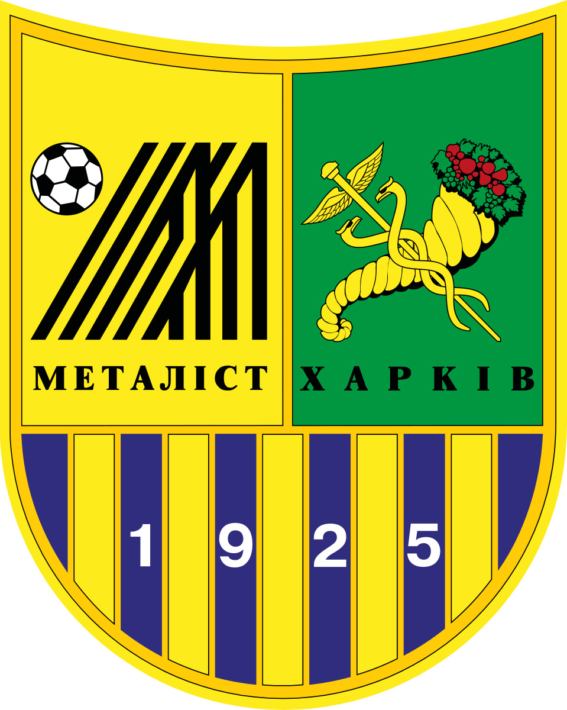

«Металіст» — український професіональний футбольний клуб із міста Харкова. Заснований у 1925 році. За свою багаторічну історію клуб пройшов шлях від заводської команди до одного з лідерів українського футболу, який неодноразово представляв Україну на європейській арені.
Команда є багаторазовим призером чемпіонатів України (зокрема володарем срібних та бронзових нагород), а також фіналістом Кубка України. Найвищим досягненням на єврокубковій арені є вихід до стадії чвертьфіналу Ліги Європи УЄФА.
Сторінку підготував студент групи 302-ТН Грипась Д.О.